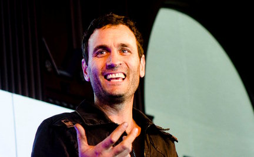

The UI of Nature: How nature's hidden language of interfaces will impact the future of interaction
Exploring nature’s hidden language of interfaces reveals a system for designing the next generation of interactions between people and things.
As humans strive to design ever more sophisticated interfaces and experiences, it’s clear we need new models –and new languages– to guide the way. Looking across disciplines for inspiration, we find that biological systems have been perfecting interfaces for eons. Where animals and plants are the users, and ecological systems are the screens upon which interactions, relationships and experiences play out, evolution has produced ingenious design solutions to seriously complex UI/UX problems. Over millions of years, the natural selection of interactions has resulted in a wealth of elegant processes (bees pollinating plants, for example) that mold individual behavior for long-term fitness.
All of this leaves us wondering:
Is there a universal language that nature uses to communicate with itself? The answer appears to be yes, and the language appears to be UI.
So, is there something hidden in nature’s language of interfaces that might reveal a system for designing the next generation of interactions between people and things?
What might studying these ecological interactions, and associated interfaces, teach us about our views on UI/UX?
What tricks does the natural world employ to signal, filter noise, prevent errors, and make system status visible?
In constantly evolving ecological systems, how do nature’s interfaces adapt to meet the needs of it’s users?
In nature, relationships are everything. An ecosystem, in fact, is defined by it’s dynamic network of relationships and complex interactions. To succeed, individuals need the system to thrive, just as the system needs individuals to flourish. As a result, individuals, populations and communities –be they ants or orangutans (or humans?) – are constantly in dialogue, 24/7/365, give or take four billion years. Add to the mix that natural systems are constantly evolving, forever adapting to the needs of individuals and communities –as well as perturbations to the system– and you’ve got some rich fodder for design inspiration.
In this provocative talk, we’ll:
- Draw useful connections between the UI of Nature and the nature of UI .
- Highlight some jaw-dropping examples of UI in the natural world .
- Articulate a set of ecologically inspired principles that can be applied to designing leading edge interactions between people and things.
- Present case studies that demonstrate opportunities for next generation Interaction Design.
Zak Brazen
About Zak: Zak Brazen is an Experience Designer. With a Bachelors in Environmental Studies and Human Ecology (Syracuse University) and a Masters in Interaction Design (California College of the Arts), he thinks a lot about how relationships define systems and how to best illuminate the important touch points in extended networks. As Creative Director for George P. Johnson, Zak specializes in creating physical and digital interactions that delight people and differentiate brands. Clients such as Nike, Coke, Fairtrade and The United Nations have turned to Brazen for his pioneering approach to delivering environmentally-inspired design.
Throughout his career, Zak has facilitated hundreds of workshops on topics ranging from biodiversity and interaction design to creative leadership and organizational ingenuity. With a wealth of international experience, he brings a deep cultural sensitivity and global perspective to whatever water cooler he happens to be standing around.?
Long committed to people, planet, and storytelling, Zak founded 'The EarthDance Short-Attention-Span Environmental Film Festival' which explores the relationship between culture, nature and design. Since 2005, EarthDance has screened annually in 9 countries, raised over $250,000 for environmental issues, and has been viewed by over 40,000 eyeballs.
Wyatt Starosta
About Wyatt: Wyatt Starosta is a User Experience Researcher. He specializes in developing qualitative research programs to understand people's goals, motivations, and emotional experience. He looks to inform and inspire designers, engineers, and executives to make valuable decisions.